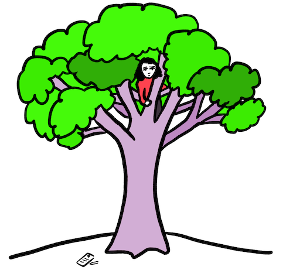
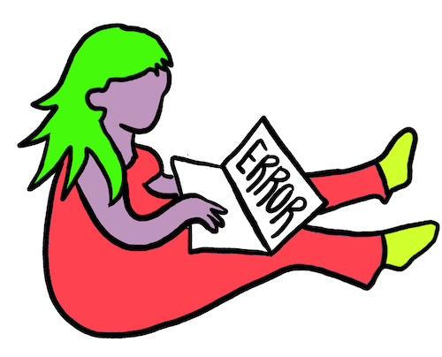

Experience Design:
Transforming Problems into Joyful Experiences
I wrote this post to share how and why I design experiences. I hope you'll walk away with some questions you can ask and tools you can use to think about designing better experiences.
Why I design experiences
I knew something was wrong when a medical intake form drove me into a tree.
The receptionist gave me a form on a clipboard with a pen and the next thing I knew I was running out the door and climbing to the top of a nearby tree.
But it took me years to realize that most people don't feel like there are tiny blades stabbing their eyeballs when the lights are too bright. That most people’s throats don’t close up when a person in the room wears too much perfume.

Many people can fill an intake form, pay a new bill, or book a trip without watching their own brains shriek and howl and claw through error pages until something as simple as copying a passport number becomes impossible.

But all of us are struggling. We grit our teeth and navigate broken websites, broken systems, and inhumane experiences. Sometimes we complain, but often the systems for lodging a complaint are broken too.

To understand a product, a space, or a service we need to understand it in relation to the living beings experiencing it. All the spaces, services, and even products we encounter can be understood as experiences.
Why do bad experiences matter?
We are each born with a specific set of circumstances outside our control and some DNA. The rest of who we are and who we will become is shaped by our experiences: the spaces and things that shape us as we shape them.

Our experiences are shaped by the structures and spaces that contain our lives. These might be offices, prisons, hospitals, airports, or waiting rooms. These could be government services, insurance reporting forms, job interviews, or traffic jams. They could be conferences, music shows, or meetings. Increasingly, these include social media platforms, email inboxes, and apps.
Many of these spaces generate misery. Who is in charge of designing and planning these experiences, and why are they so terrible for so many of us?
Why are experiences bad?
Here are some of the reasons why experiences are poorly designed:
- Resources: There aren’t enough resources to design or build a better experience.
- Valuation: Design of experiences isn’t understood or considered a priority.
- Constraints: There are limitations or intertwined systems constraining the experience.
- Manipulative Design: Designed to control or funnel behaviour to specific ends.
- Hostile Design: Intentionally uncomfortable to discourage use.
- Overengineering: Experience is rigidly defined with more rules than substance (like bureaucracy).
- Inheritance: Reproduction of frameworks that historically seemed to work, but no longer apply.
- Mono: Experience is designed to reflect the goals or needs of a single person (guess who)
- Averaging: Designed to work for an imaginary average person.
- Waterfall: Experiences were designed once and are considered complete forever.
- Tunnel Vision: Driven by a key metric (like sales) at all costs, without considering the environment that produces the metric.
How I design experiences
When I design experiences, I consider the space not as an object or product or an event, but as an experience: a space of possibility; a set of opportunities and constraints; something that we move through, interact with, that we help to shape, and that shapes us.

I’m inspired by all the bad experiences I’ve ever had or witnessed. And each broken system, each precious moment we dump into structures that carelessly grind away the human spirit, I see as inspiration for something better.
I design experiences to:
- Grow peace, joy, and flow
- Uncover patterns in the noise
- Open access paths for people who think, move, and function in different ways
- Build supportive constraints and destroy deforming constraints
- Grow space for people to meet their needs
- Design for what we are, and what we want to be
- Listen and build and listen again
Experience design is not a pipeline: it is a flow of experiences through, underneath and around the project. And for me, the design process can be understood as an ongoing interaction between listening, design, and experimentation.

Start by asking questions
When I'm designing experiences, the first questions are always pointing inward. Here are a few sample questions:
- Why are we here? Are we together on what matters to us, what binds us, what pulls us forward?
- Who are we? Are we the right people to do this work? Is everyone here who should be here?
- Are we in? Are we emotionally committed? Do we have resources?
- What is our work space? What is the overlapping space between what people want from us and what we want to give them?
- What do we want people to feel? What do we want people to feel, think, say?
- What do we believe? What are our pre-existing theories, assumptions, observations, and stories?

Listening to people
To design experiences, we need to listen to the people we are designing with and for. We need to do more than ask questions at a diverse group of people and write down their responses. It’s not enough to group people into personas, speculate with sticky notes, and call it empathy.

We need to listen responsively, opening ourselves to a variety of listening tactics: stories, metaphors, images, play, data, interviews, and on-site interactions. Experiential truth is something that needs to be experienced to take shape.
We must be consent-driven in our practice, continuously open to our unexamined bias, deeply skeptical of all speculative empathy, and diligent in our validation.
A few questions to consider:
- Who are we talking about? Can we make a list of everyone who touches our work? Who is missing? How will we order the list? Who do we want to grow towards?
- Why are people here? What are their needs, motivations, feelings, and values?
- Where is the joy? Are there parts of our experience that bring people joy?
- Where are the barriers? Social, knowledge, financial, physical? Full, partial, unknown?
- How does the experience flow? Map it out. Consider things like motivations, barriers, values, desire paths, loops, choices, points-of-joy, interactions and goals.

We understand our research as what it is: an abstraction. To conduct our research we abstract, dissect, categorize, and generalize. All this is useful, so long as we remember that there is no meaningful way of understanding a single experience outside of the complex and lived whole.
Scaffolding
It's useful to build a temporary structure of understanding after the intense open curiousity of research work and before we jump into experimentation. This can include:
- Setting Goals: It’s easy to set goals while listening to the people we want to serve. We look to the intersection between what we do and what they need.
- Cohesion check: Now is a great time to look at ourselves for cohesion. Are we holding doors open and closed at the same time? Are there parts of our work that seem like non-functional extra appendages, waving at no-one in the wind?
- Timelines: No one respects an arbitrary deadline. Luckily, there is always some natural human urgency to fixing broken things and actualizing the vision in our minds.
- Success criteria for experiments: we should be able to clearly describe what we are aiming to do (without reducing our vision to a single metric, which tends to squish and destroy everything)
- Building our experimentation team: If our experiments aim to serve specific groups of people, we collaborate and consult with them throughout the entire process. There’s no other way. Speculative empathy is garbage.
Generating & strengthening ideas
If we have worked through the questions above, we will have some intuitions bubbling up. We may even find that our heads are about to explode with delightful squirming ideas. Yes? It’s time to design a strategy for creative experimentation!
- Find inspiration: For design inspiration, we can immerse ourselves in the feelings people want to feel, the reasons people come to us, the barriers people face, and what we want people to feel. Our ideas for experiments can unclog blocked parts of the experience, broaden tight spots, hem unravelling places, bridge gaps, bring clarity, build new paths, and make experiences more useful, connecting, and joyful for people.
- Be open to ideas: It’s best to create a very long list of experiments, the silly, the strange, the shocking, the plagiarized, the boring, the redundant: all welcome. Create an emotionally open and non-judgemental space, document everything.
- Look around: Consider other organizations and groups who have faced similar challenges: how did they do it? Most transformative ideas aren’t new: they can easily be traced from one field to another, or are new combinations of existing ideas.
- Choosing ideas: Prioritize relevant experiments which transform a barrier or serve an unmet need for the people we are prioritizing. Some of these experiments can serve unmet needs in obvious ways, and some can be more intuitive, wild, and playful.
- Playtest ideas: Build out a sketch or prototype and play them out.
One of the magical things about designing experiences is that it can honour the people as people with choices, wandering around in an open world. We design experiments that simply invite people in particular directions, particular spaces or particular interactions.

Implementation & Feedback
Finally, we begin implementation. We execute our experiments and have the joy of watching them unfold.
Some experiments will succeed, some will fail, and some will have some unexpected results. Sometimes we may fail to understand the difference between the three. Don’t worry though, the people we are designing with (and for) will be able to understand the difference.
Documentation and on-site listening are critical for later review. Each experiment is a space for learning more about the people we are working with and about the act of designing experiences itself. And as soon as we begin to implement our experiments we begin our research again: listening, watching, and working to understand.
Conclusion
We each start our lives with some DNA and circumstances, and as far as anyone knows, the rest of who we are is shaped by the experiences in our lives. We can’t take our experiences lightly.
I design experiences for people.
I do this because of a lifetime of interminable waiting rooms, bureaucratic mazes, sales funnels, and other deadening substitutes for a meaningful existence. We deserve better. We are all capable of better.
I work with interactions, motivations, affordances, barriers, and flow. I work for and with people, working with identities and communities that intersect and overlap in complex ways.
I listen, watch, and gather information on the way people experience things. I invest time in considering the ways people and their environments are interacting. I design and experiment with tiny side-quests and adventures. And I facilitate an ongoing process where the needs of people inform the shape of the experience, event, product, or space.
There are some things that I don’t do. I don’t try to control the experience of people. I don’t push diverse people towards a rigidly defined experience. And I don’t work without consent.
My work isn’t aggressively transformational, at least not in a magic-wand kind of way. My work doesn’t take a mediocre or bad situation and use a touch of sparkle dust to make it good. It’s an ongoing practise, a continuous commitment to paying attention, a slow transformation towards better experiences.